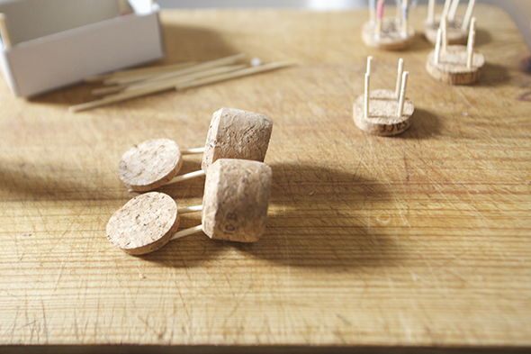
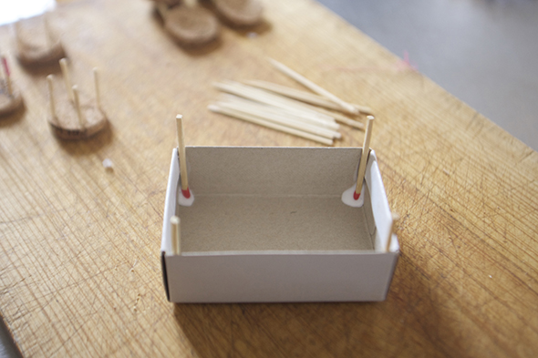

Werkstatt kleiner Möbel ... wir zeigen Euch das Ergebniss später. Hannah will ein Restaurant eröffnen! Natürlich in unserem Haus!



Werkstatt kleiner Möbel ... wir zeigen Euch das Ergebniss später. Hannah will ein Restaurant eröffnen! Natürlich in unserem Haus!

So schnell bepflanzen wir den Garten unseres Puppenhauses. Zum Frühlingsanfang basteln wir Miniatur-Bäume aus Draht mit ganz vielen Blättern.
Weiterlesen →
Hier eine Druckvorlage für einen Hubschrauberlandeplatz für das kleine Modul des Hauses. Das Papier kann man in die Rillen schieben um Kleber zu vermeiden. (So kannst…
Weiterlesen →

Bei dieser Hitze, hilft nur sich ein kühles Plätzchen zum spielen zu suchen.
Weiterlesen →
Jetzt sehe ich nur noch Servietten zum dekorieren. Diese Servietten von Ikea machen sich einfach perfekt als Tapete!
Weiterlesen →
Das Modul Wohnzimmer in den Herbstfarben. Rotes Spray und Punkte als Aufkleber.
Weiterlesen →